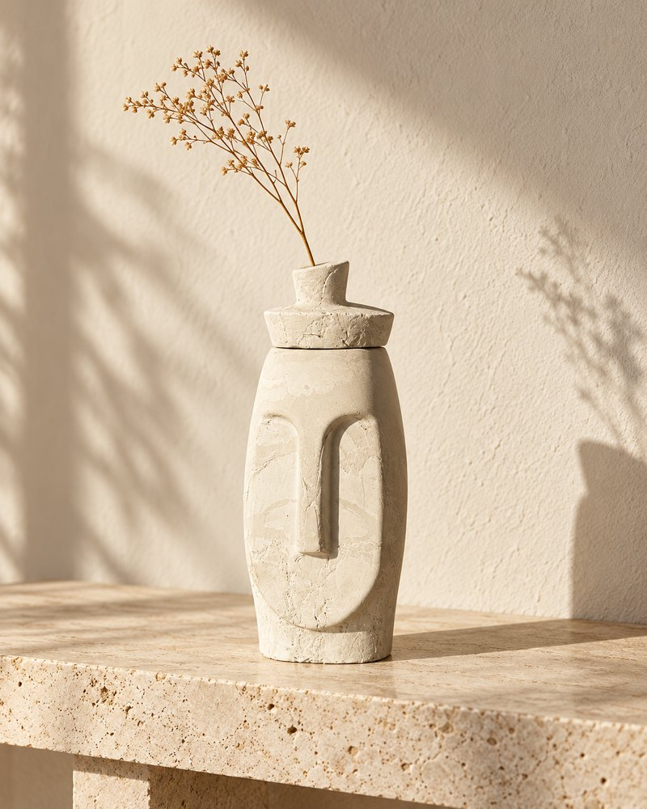
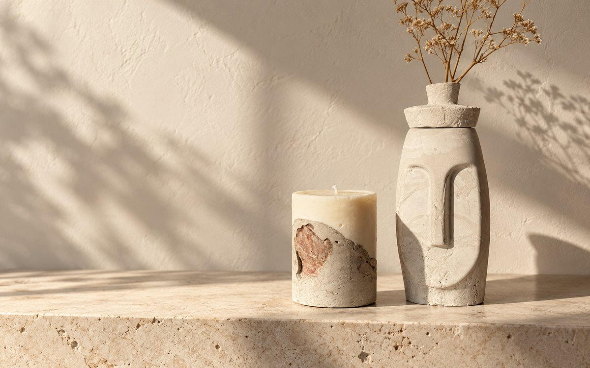
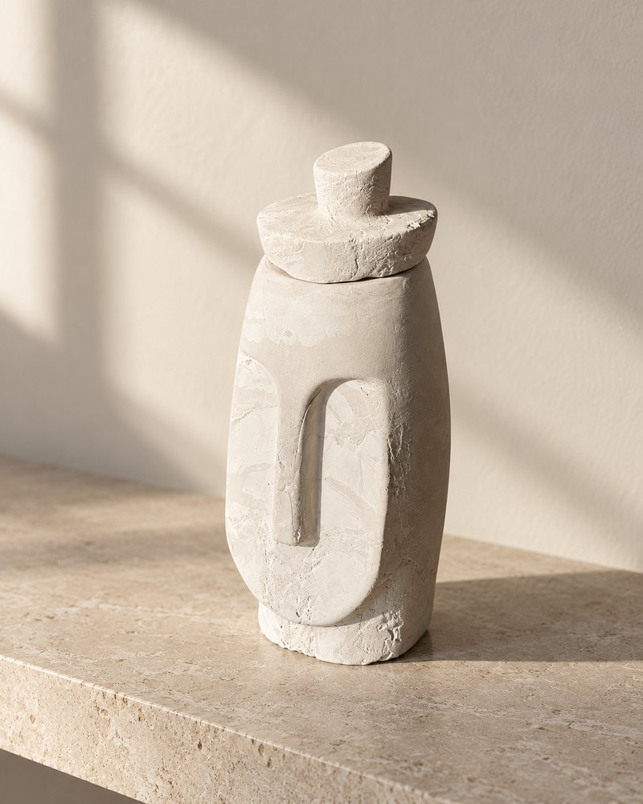

ВАЗА-КОПИЛКА↗Арка
Ароматная свеча · форма для вазы или денежного подарка

НЕБОЛЬШАЯ МАСТЕРСКАЯ
тихая форма
Ароматные свечи и формы
из гипса и цемента
Свечи и объекты ручной работы
Небольшие серии ароматных свечей и предметов для дома. Неровные линии, тёплый свет и красота, которую приятно трогать.
Смотреть коллекцию ↓Неидеальное — живое
«Тихая форма» — камерная мастерская предметов для дома. Мы лепим, шлифуем и заливаем каждую форму вручную, поэтому двух одинаковых вещей не бывает.
Чуть больше о нас ↗Маленький ритуал дома
Каждая свеча наполняет пространство приятным ароматом и мягким светом. Формы создаются вручную из гипса и цемента — поэтому у каждой свой рисунок и характер.
Когда свеча закончится, некоторые формы можно использовать как небольшую вазу или вложить внутрь деньги и подарить близкому человеку.
Найти свою форму

ВАЗА-КОПИЛКА↗Ароматная свеча · форма для вазы или денежного подарка

ГИПС И ЦЕМЕНТ↗Ароматная свеча · форма для подарка и интерьера
 СВЕЧА · РУЧНАЯ РАБОТА↗
СВЕЧА · РУЧНАЯ РАБОТА↗
Ароматная свеча в форме из гипса и цемента
 СВЕЧА И ВАЗА↗
СВЕЧА И ВАЗА↗
Ароматная свеча — 499 ₽ · ваза-копилка — 399 ₽
Формы могут немного отличаться — в этом их характер.
Как заказать ↗Пусть у повседневности
будет свой ритуал.
Сделано с вниманием
Из этих материалов рождаются выразительные формы с живой фактурой. Каждая вещь создаётся вручную.
Небольшие различия в линиях и оттенке делают каждую вещь единственной. Вы получите именно тот предмет, который выбрали.
Отправляем заказы по всей России. Срок доставки — до 7 дней.
Заказ и доставка
Закажите ароматную свечу или вазу-копилку в Instagram. Отправляем СДЭК по всей России, срок доставки — до 7 дней.
Заказать в Instagram ↗СДЭК · ПО ВСЕЙ РОССИИ · ДО 7 ДНЕЙ